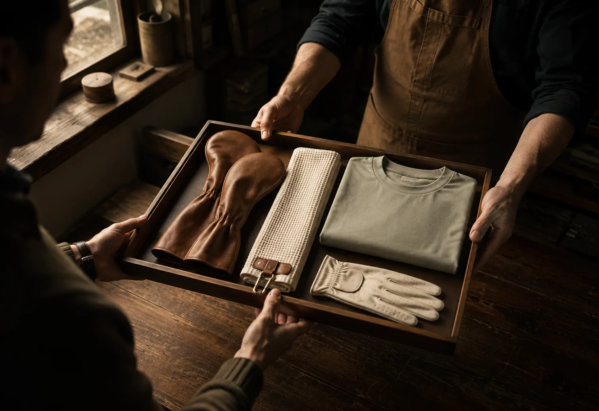
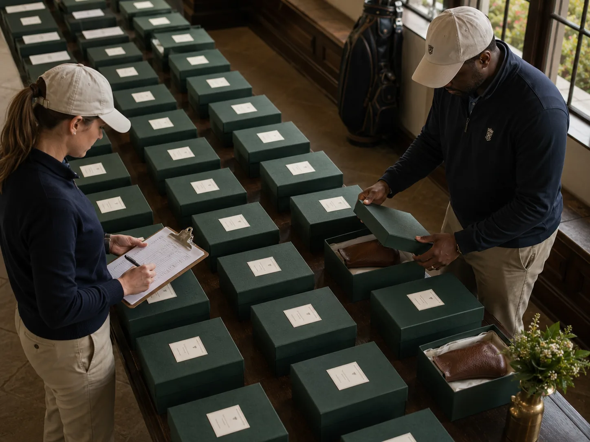

Member-Guest
Each guest's own initials rather than the tournament logo.
A Commissioning House for Golf — Est. 2026
We draw the mark, set it by hand, and put it on the pieces they take out every week — until the leather is soft and the name has outlived the gift.
Commission your mark →Why Signum Exists
Signum brings bespoke golf craftsmanship to every golfer who values personal identity — not just those with access to a private club.
For a century a personal mark meant one thing: a locker at the right club. The craft was real. The door was closed.
We kept the craft and removed the door. Every commission is drawn one-on-one, proofed before it is made, and produced for one person only.
Championship course or municipal nine — your identity is worth drawing properly.— The Founder
Chapter I — Your Identity
Your initials, your number, the year your daughter first broke a hundred. One mark, carried across everything you play with.
Draw your mark01
Drawn from scratch. Nothing pulled from a font menu.
02
A proof on the material itself. Nothing is cut until you say so.
03
Leather, thread and edge paint held consistent across every piece.
04
Add a piece in ten years and it will still match.
Chapter II
Six pieces, one mark. A single commission or the full set.

IChapter III
Choose the piece, place the mark where you want it seen, settle the colorway. Then we draw it by hand and send a proof.
Proof — one of one
Simulated · not to scale
Drag the mark to position it within the zone
Or tap the marked points on the proof
The Commission
Four to six weeks from first sketch to delivery. Nothing is produced without your word.
How you play, who you play with, and what the mark should stand for.
Two or three directions for your mark, colorway set with leather in hand.
Actual material, actual size, placement shown on every piece. Revise freely.
Cut, stamped and stitched by one maker, who signs the interior.
Presented with the original drawing and entered into the commission book.
Chapter IV
One conversation can outfit an invitational field or an entire membership.
Each guest's own initials rather than the tournament logo.
We bring the leather, stamps and drawing table to your clubhouse for a weekend.

Individually marked pieces for a field of a hundred and forty, boxed and named.
Chapter V
Each recipient's own initials, drawn by our studio. Your company's name appears once, discreetly, inside.
Chapter VI
Couples who play together. A junior finding her game. A mark is made to be shared, and one day handed on.
Junior commissions are held to the same standard as every other. A mark that is entirely theirs.
For Her
Cream leather and champagne thread, navy with rose gold — drawn one-on-one, held to the same standard.
For Two
Two distinct marks in a shared palette. Recognisable together, individual in the hand.
For Junior
Every serious junior athlete has gear that signals identity. In golf it disappears. We give it back.
Recent Commissions
Every piece begins as an entry in the commission book — a name, a story, a mark that never existed before.
No. 0117
Thirty years of Sunday golf. Interlocking initials carried across two full sets.
Espresso & Camel — Full commission
No. 0142
Her number as a brass medallion. The first thing she unpacks at every event.
Navy & Rose Gold — Headcovers
No. 0163
No club, no locker, thirty-two years of Thursday twilight.
Deep Green & Brass — Bag & shirts
No. 0188
An invitational field, each player's own initials. Not one logo in the boxing.
Burgundy & Gold — Tournament
In Their Words
Three people asked where I got it before the second tee. Nobody asks that about golf gear.
She keeps the headcover on her nightstand before a tournament. That is what we actually bought.
I don't belong to a club. I have never cared less about that than I do carrying this bag.
Commission Your Mark
Tell us what the mark should say. We reply within two business days with sketches, materials and a quote.